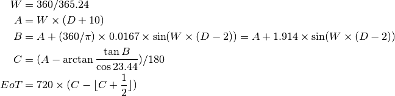

trunorth – True North via the Sun¶
Analysis¶
This program appears to evaluate a version of the Equation of Time. See http://en.wikipedia.org/wiki/Equation_of_time
20 :REM'Ref. ARRL ANTENNA BOOK, 14th Edition, page 16-2
We have 36 “wobble correction factors” that apply throughout the year. Each factor belongs to the 1st, 11th or 21st of each month.
160 :REM'.....wobble correction factors
170 DATA 4,8,11, 13,14,14, 13,10,8, 4,1,-1, -3,-4,-4, -3,-1,1
180 DATA 4,5,6, 6,5,3, 1,-3,-7, -10,-13,-15, -16,-16,-14, -11,-7,-2
These are loaded into array, C, with three related fields.
- C (Z, 1) is month: 1-12.
- C (Z, 2) is day of month: 1, 11 or 21.
- C (Z, 3) is the wobble correction factor for this month and day. This appears to be in minutes.
The following approximations are used for time offsets.
600 TIM=DEG/15 :REM'time in hours to centre of time zone
610 SN=TIM+12
Here’s the code to compute the LST of noon on a given date using the “wobble correction factors”.
720 N=SN+C(Z,3)/60:IF N>=1160 THEN N=N+40
730 IF N<0 THEN N=N+24
740 T=INT(N)*100+(N-INT(N))*60
750 T=INT(T+0.5!):T$=RIGHT$(STR$(T),LEN(STR$(T))-1)
760 IF LEN (T$)<4 THEN T$="0"+T$:GOTO 760
770 LST=T+UTC*100:IF LST>=2400 THEN LST=T-1200
780 PRINT TAB(6)M$(C(Z,1));USING "###";C(Z,2);
790 PRINT " @ ";T$;" UTC (";LST;"LST )";
720. N is UTC offset + 12 + wobble correction factor/60. Presumably in hours.
If N >= 1160 clause doesn’t make a lot of sense: SN is in the range 0 to 24. the correction factors are plus or minus 0.26
730. N = N mod 24.
740-760. Convert to N to T, an HH:MM number and T$ the string version of T.
770. LST is T+UTC offset converted to an HH:MM number.
Alternative¶
In the following, D is the date, in days starting at zero on January 1.

Here’s the note on the sign.
In this article, and others in English Wikipedia, a positive value of the equation of time implies that a sundial is ahead of a clock.
This works for any day of the year. The tabulated values above belong to 36 dates spaced about 365.24/36=10.1455 days apart.
Implementation¶
The Equation of Time function can be added to the solar module.
Here’s the Python code to reconstruct the “Wobble Correction Factors” with the more conventional sign.
def eot(d):
W = 360/365.24
A = W*(d+10)
B = A +1.914*(math.sin(math.radians(W*(d-2))))
C = (A-math.degrees(math.atan2(math.tan(math.radians(B)),math.cos(math.radians(23.44)))))/180
return 720*(C-int(C+.5))
Legacy Output¶
Introduction
TRUE NORTH via the Sun by George Murphy VE3ERP
The shadow of a vertically plumb stake cast by the sun at High
Noon runs exactly north and south. This ancient axiom can be used to
aim your antenna, orient a sundial, or calibrate your car compass.
If the stake is north of lat. 23.5°N the shadow points north, if
south of lat. 23.5°S, it points south. If the stake is between
these latitudes and above the Equator the shadow points north in
the winter and south in the summer. If south of the Equator it
points north in the summer and south in the winter.
To determine just when High Noon is, you must know your longitude.
This will tell you when High Noon is SUPPOSED to occur but doesn't,
due to the somewhat complex wobbling of the earth about its axis as
it circles the sun. Ancient mathematicians didn't know much about
the wobble but we do, so we have to take it into account, which the
program does.
The program refers to High Noon as SOLAR NOON (it sounds more
High Tech). Local SOLAR (geophysical) TIMES shown may not be the
same as STANDARD (political) TIMES in some political jurisdictions,
and are dependent on your distance east or west of longitude 0.00°
or the nearest multiple of 15 degrees of longitude.
Results Table
At longitude 76.5°W SOLAR NOON times throughout the year are:
(UTC = Universal Co-ordinated Time) (LST = Local SOLAR Time)
Jan 1 @ 0710 UTC ( 1210 LST ) Jul 1 @ 0710 UTC ( 1210 LST )
Jan 11 @ 0714 UTC ( 1214 LST ) Jul 11 @ 0711 UTC ( 1211 LST )
Jan 21 @ 0717 UTC ( 1217 LST ) Jul 21 @ 0712 UTC ( 1212 LST )
Feb 1 @ 0719 UTC ( 1219 LST ) Aug 1 @ 0712 UTC ( 1212 LST )
Feb 11 @ 0720 UTC ( 1220 LST ) Aug 11 @ 0711 UTC ( 1211 LST )
Feb 21 @ 0720 UTC ( 1220 LST ) Aug 21 @ 0709 UTC ( 1209 LST )
Mar 1 @ 0719 UTC ( 1219 LST ) Sep 1 @ 0707 UTC ( 1207 LST )
Mar 11 @ 0716 UTC ( 1216 LST ) Sep 11 @ 0703 UTC ( 1203 LST )
Mar 21 @ 0714 UTC ( 1214 LST ) Sep 21 @ 0659 UTC ( 1159 LST )
Apr 1 @ 0710 UTC ( 1210 LST ) Oct 1 @ 0656 UTC ( 1156 LST )
Apr 11 @ 0707 UTC ( 1207 LST ) Oct 11 @ 0653 UTC ( 1153 LST )
Apr 21 @ 0705 UTC ( 1205 LST ) Oct 21 @ 0651 UTC ( 1151 LST )
May 1 @ 0703 UTC ( 1203 LST ) Nov 1 @ 0650 UTC ( 1150 LST )
May 11 @ 0702 UTC ( 1202 LST ) Nov 11 @ 0650 UTC ( 1150 LST )
May 21 @ 0702 UTC ( 1202 LST ) Nov 21 @ 0652 UTC ( 1152 LST )
Jun 1 @ 0703 UTC ( 1203 LST ) Dec 1 @ 0655 UTC ( 1155 LST )
Jun 11 @ 0705 UTC ( 1205 LST ) Dec 11 @ 0659 UTC ( 1159 LST )
Jun 21 @ 0707 UTC ( 1207 LST ) Dec 21 @ 0704 UTC ( 1204 LST )
Legacy Quirks¶
Look closely at lines 720-790 and 810-880. With the addition of a “+18”, they are othwerise idental copy-and-paste clones of each other.